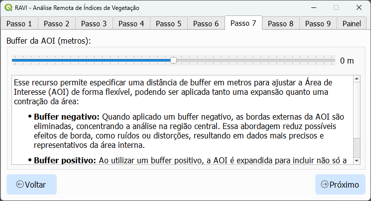

RAVI - Análise Remota de Índices de Vegetação
RAVI é um plugin para QGIS projetado para se integrar ao Google Earth Engine (GEE), permitindo o processamento e a visualização eficientes de dados geoespaciais. Utilizando o catálogo de reflectância de superfície harmonizada do Sentinel-2, o plugin suporta cálculos de índices de vegetação e o download fácil de imagens multiespectrais. Esses recursos tornam a ferramenta viável para estudantes, pesquisadores, agricultores e profissionais de GIS que atuam na agricultura, monitoramento de terras ou gestão ambiental.
Principais Funcionalidades
1. Integração com o Earth Engine
- Autenticação Fácil: Autentique-se no Google Earth Engine para habilitar a funcionalidade do plugin.
- Processamento Direto: Acesse, processe e analise imagens do Sentinel-2 sem sair do QGIS.
- Visualização Imediata: Visualize os dados processados como camadas raster ou gráficos interativos.
2. Cálculos de Índices de Vegetação
- Índices Suportados: Calcule índices como NDVI, EVI, SAVI e GNDVI.
- Métricas Personalizáveis: Agregue os dados utilizando média, máximo, mínimo, mediana, amplitude ou desvio padrão.
3. Análise Avançada de Séries Temporais
- Gere séries temporais para os índices de vegetação sobre uma Área de Interesse (AOI) definida.
- Integre dados de precipitação da NASA POWER para comparações entre variáveis.
- Suavize os dados com filtros de Savitzky-Golay para uma análise de tendências aprimorada.
4. Seleção de área de interesse (AOI)
- Gerenciamento de AOI: Carregue áreas de interesse a partir de arquivos shapefile ou GeoJSON.
5. Visualização Interativa
- Gráficos: Crie gráficos interativos de séries temporais usando o Plotly.
- Estilização de Raster: Aplique rampas de cores predefinidas (por exemplo, RdYlGn) para melhor clareza visual.
- Opções de Exportação: Exporte os dados processados como GeoTIFFs, CSVs ou rasters estilizados.
6. Gerenciamento Abrangente de Imagens
- Filtragem por Data: Filtre imagens individuais por data de aquisição.
- Filtragem por Nuvens: Exclua ou masque pixels nublados, preservando os dados utilizáveis.
- Criação de Imagens Sintéticas: Gere imagens sintéticas com base em métricas definidas pelo usuário.
Instalação
Para instalar o RAVI:
- Abra o QGIS e navegue até o menu Plugins.
- Selecione Gerenciar e Instalar Plugins.
- Na aba "Todos", pesquise por "RAVI", selecione-o e clique em Instalar.
- Certifique-se de que o RAVI está marcado na lista de plugins instalados.
- Reinicie o QGIS.
Uso
Passo 1: Autenticação

- Abra a janela do plugin.
- Autentique-se no Google Earth Engine utilizando suas credenciais.
Passo 2: Selecionar a pasta de saída
Escolha a pasta onde deseja salvar os arquivos de saída.
Passo 3: Carregar e selecionar a área de interesse (AOI)

- Selecione uma AOI carregando um arquivo shapefile ou GeoJSON.
- Certifique-se de que a geometria é válida (apenas Polygon ou MultiPolygon).
- Adicione uma camada do Google Maps ao canvas do QGIS para melhor visualização e contexto.
- Use o botão Construir área de interesse a partir da extensão do mapa para gerar automaticamente uma nova AOI com base na extensão atual da tela.
Passo 4: Definir o intervalo de tempo para busca de imagens

Defina um intervalo de tempo personalizado ou selecione um sugerido.
Passo 5: Selecionar o índice de vegetação para análise de séries temporais

Escolha o índice de vegetação que deseja analisar a partir do menu.
Passo 6: Filtro de sobreposição de imagens

Utilize o filtro de Buffer de AOI para reduzir o limite da AOI para análise.
Passo 7: Buffer de AOI
Defina o filtro especificado de acordo com os requisitos da sua análise.
Passo 8: Filtro de porcentagem de pixels nublados

Defina o filtro especificado de acordo com os requisitos da sua análise.
Passo 9: Filtro de porcentagem de pixels válidos

Defina o filtro especificado de acordo com os requisitos da sua análise.
Página de Resultados
1. Gráfico de Séries Temporais

- Visualize a série temporal do índice de vegetação selecionado sobre a AOI definida.
- Coloque o cursor sobre o gráfico para ver valores e datas específicos para uma análise detalhada.
2. Carregar Camada RGB (Foco em um Dia)

Carregue e exiba uma camada RGB para uma data específica para analisar a aparência visual da área. Todas as bandas espectrais são baixadas, e os números das bandas correspondem às bandas do Sentinel-2 conforme listado na tabela abaixo:
| Nome da Banda Sentinel-2 | Número da Banda no QGIS | Comprimento de Onda (nm) | Resolução Espacial (m) |
|---|---|---|---|
| Banda 1 (Aerossol Costeiro) | 1 | 443 | 60 |
| Banda 2 (Azul) | 2 | 490 | 10 |
| Banda 3 (Verde) | 3 | 560 | 10 |
| Banda 4 (Vermelho) | 4 | 665 | 10 |
| Banda 5 (Borda Vermelha da Vegetação) | 5 | 705 | 20 |
| Banda 6 (Borda Vermelha da Vegetação) | 6 | 740 | 20 |
| Banda 7 (Borda Vermelha da Vegetação) | 7 | 783 | 20 |
| Banda 8 (NIR) | 8 | 842 | 10 |
| Banda 8A (Borda Vermelha da Vegetação) | 9 | 865 | 20 |
| Banda 9 (Vapor d'água) | 10 | 945 | 60 |
| Banda 10 (SWIR - Cirrus) | 11 | 1375 | 60 |
| Banda 11 (SWIR) | 12 | 1610 | 20 |
| Banda 12 (SWIR) | 13 | 2190 | 20 |
3. Carregar Camada de Índice (Foco em um Dia)
Carregue e exiba uma camada de índice de vegetação para uma data específica.
4. Carregar Camada de Índice (Sintética)

Gere e exiba uma imagem sintética baseada no índice de vegetação selecionado e na métrica definida pelo usuário.
A imagem sintética incluirá todas as imagens dentro do intervalo de datas atual. Utilize a ferramenta de seleção de data
para filtrar datas específicas.
5. Ferramenta de Seleção de Data

- Use a ferramenta de seleção de data para filtrar e selecionar datas específicas para análise.
- A ferramenta de seleção de data atualiza o gráfico de séries temporais.
- Imagens sintéticas são baseadas em todas as datas selecionadas.
6. Filtro Savitzky-Golay

Aplique o filtro de Savitzky-Golay para suavizar os dados de séries temporais e aprimorar a análise de tendências.
Os parâmetros do algoritmo Savitzky-Golay, como a ordem do polinômio e o tamanho da janela, podem ser ajustados conforme
necessário para refinar o processo de suavização.
7. Opções de Salvamento


Salve os dados da série temporal em formato de planilha (CSV).
Para salvar a série temporal como imagem, abra-a no navegador para habilitar a opção de download.
8. Precipitação NASA POWER
Adicione dados mensais de precipitação do NASA POWER para comparações entre variáveis.
Salve os dados de precipitação em formato de planilha (CSV).
9. Executar Nova Série

Execute rapidamente uma nova análise de série temporal alterando a Área de Interesse (AOI), o Índice de Vegetação ou o intervalo de tempo.
10. Limpar Todas as Camadas
Limpe todas as camadas carregadas do painel de camadas para iniciar uma nova análise ou para organizar o espaço de trabalho.
Solução de Problemas
- Falha na Autenticação do Earth Engine: Certifique-se de que você tem os requisitos necessários, conforme explicado na aba de autenticação.
- Erros de AOI: Verifique se o arquivo da AOI é válido e se possui um CRS válido (de preferência EPSG:4326).
Relatar Problemas
Se você encontrar problemas ou tiver sugestões de melhorias, abra uma issue na seção de GitHub Issues.
Contribuição
Contribuições são bem-vindas! Visite o repositório do GitHub para começar.
Licença
RAVI é licenciado sob a GNU General Public License v2.0 ou superior. Consulte o arquivo LICENSE para mais detalhes.